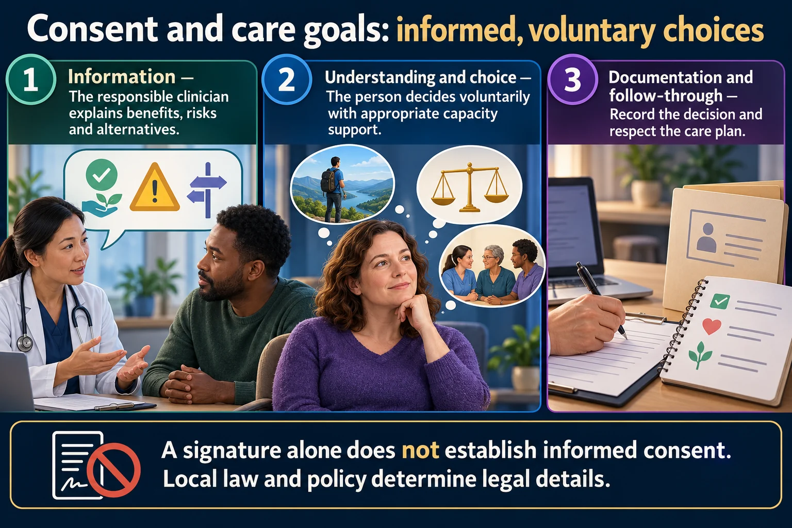

The 6 ethical principles every legal/ethics NCLEX question is built on
Every ethics/legal NCLEX question — informed consent, restraints, refusing treatment, AMA discharge, advance directives — is secretly testing one of six words: autonomy, beneficence, nonmaleficence, justice, fidelity, and veracity. Learn these six cold first — the rest of this series (Tort Law, Informed Consent, Advance Directives, AMA & Mandatory Reporting) is just these six words showing up in different clinical costumes.
📄 Simple Nursing original — opens in Drive →
Six pillars hold up every ethical decision a nurse makes — memorize the word, the one-line gloss, and one real example each.

A signature alone does not establish informed consent. Local law and policy determine legal details.
Information
The responsible clinician explains benefits, risks and alternatives.
Understanding and choice
The person decides voluntarily with appropriate capacity support.
Documentation and follow-through
Record the decision and respect the care plan.
Nursing role
Advocate, identify unanswered questions and follow policy for witnessing consent.
Advance directives
Clarify preferences and the designated decision-maker under applicable law.
Ethics
Autonomy, beneficence, nonmaleficence and justice guide deliberation.
The client's right to make their own healthcare decisions, as long as they are a competent adult who has been informed of the risks.
Example: Respecting a competent client's right to refuse a treatment — even a Jehovah's Witness refusing a life-saving blood transfusion, or a client signing out AMA.
Doing and promoting good for the client — actively acting in their best interest, not just avoiding harm.
Example: Calling a client's family to tell them their loved one is "critically ill and we are caring for their needs" so the family isn't left in the dark.
= "first, do no harm" To avoid causing harm to the client, intentionally or through carelessness.
Example: Double-checking a drug dosage with another nurse before giving a high-alert medication.
Treating clients fairly and equally — resources, time, and care distributed equitably regardless of race, gender, religion, culture, insurance status, or ability to pay.
Example: Providing the same standard of care to every client on the unit, not just the ones who tip better or complain loudest.
Staying loyal to the client and following through on your responsibilities and promises — even the small ones.
Example: Client reports 8/10 pain; the nurse states she will return with pain medication — and does.
To tell the truth — full, accurate information, even when it's uncomfortable.
Example: A medication error occurs with NO adverse effect on the client — the nurse still reports it, and still tells the client/family it happened.
Not always grouped with the classic 6, but shows up constantly on ethics questions: to protect the client's rights, health, and safety — speaking up on their behalf.
NCLEX never says the word "autonomy" out loud — it gives you the scenario and makes you name the principle.
| Scenario | Principle tested |
|---|---|
| Client reports 8/10 pain; nurse promises to return with pain meds — and does | Fidelity 🤝 |
| Nurse calls family: "he is critically ill and we are caring for his needs" | Beneficence 💙 |
| Nurse double-checks a drug dosage with a coworker before giving it | Nonmaleficence 🚫 |
| A medication error happens with zero adverse effect — nurse reports it anyway | Veracity 🗣️ |
| Nurse provides the same quality of care regardless of race, gender, religion, or culture | Justice ⚖️ |
| Nurse respects a competent client's decision to refuse a treatment | Autonomy 🅰️ |
The hardest ethics questions pit two good principles against each other — you have to know which one wins, and why.
If the client is competent, informed, and adult, their right to choose (even to refuse) outranks what the nurse or family thinks is "best." The nurse's job shifts to educate, document, and support — not override.
Nonmaleficence (avoid harm) is usually the floor; beneficence (do good) is the ceiling. A nurse must always clear the floor, and should reach for the ceiling when possible — but never sacrifice "do no harm" chasing "do more good."
Example: Restraining an agitated client "for their own good" (beneficence reasoning) without meeting the legal criteria can cross into harm — false imprisonment (see Tort Law, next page).
These six words are the connective tissue for the rest of this legal & ethics series — here's where they trip students up.
If a competent client refuses treatment and the nurse personally disagrees with the choice, the correct action is still to respect autonomy — document the refusal, ensure the client is informed, and notify the HCP. Overriding it can become battery.
A med error with zero adverse effect must still be reported — that's veracity, not overkill. Reporting also protects the next client and feeds facility safety data.
The American Nurses Association (ANA) establishes the ethical standards for the entire nursing profession — every one of these six terms traces back to that Code.